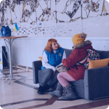
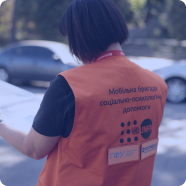
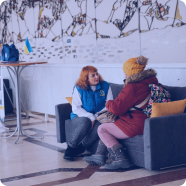
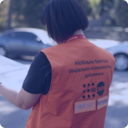

Запобігання та протидія гендерно зумовленому, зокрема домашньому насильству
Вітальне слово Голови Національного агентства України з питань державної служби Наталії Алюшиної
Натисніть Play, щоб запустити відео.
Про курс
Вітаємо у курсі «Запобігання та протидія гендерно зумовленому, зокрема домашньому насильству»!
Цей інтерактивний онлайн-курс був розроблений Вищою школою публічного управління та Національним тренінговим центром з питань протидії та запобігання гендерно зумовленому насильству у партнерстві з Національною соціальною сервісною службою України та Апаратом Уповноваженої з питань гендерної рівності за підтримки Фонду ООН у галузі народонаселення в Україні.
Курс підготовлено у 2024 році.
Для кого цей курс
Цей курс призначений для державних службовців, посадових осіб місцевого самоврядування, працівників соціальних служб, інших фахівців, які працюють у сфері запобігання та протидії гендерно зумовленому насильству.
 
Мапа курсу
Цей курс є інтерактивним і складається з 3 модулів.
Модуль 1
Основні поняття, ознаки та форми гендерно зумовленого, зокрема домашнього насильства
Модуль 2
Міжнародні стандарти у сфері запобігання та протидії гендерно зумовленому, зокрема домашньому насильству
Модуль 3
Національне законодавство та інституційна система з питань запобігання та протидії домашньому насильству та/або насильству за ознакою статі